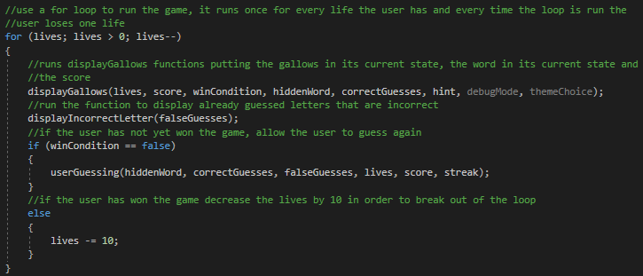
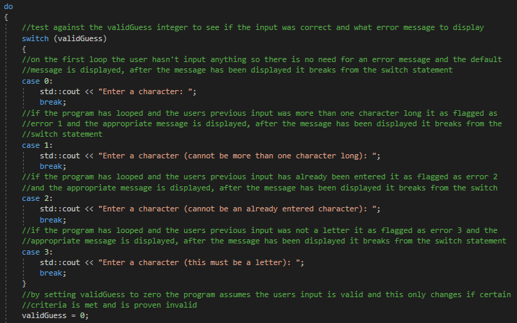
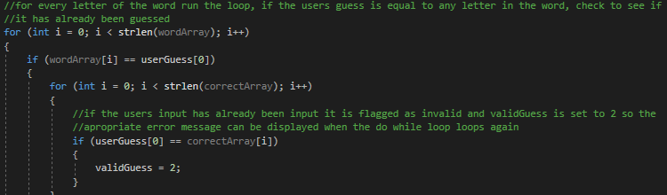
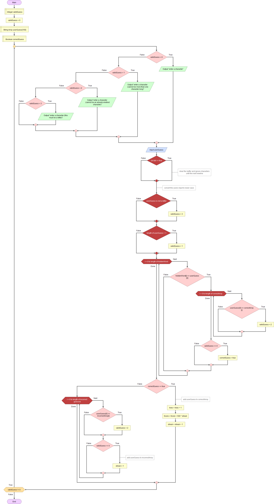

The classic game in C++
Although it's not the first assignment I did at university, this is the first major programming assignment I undertook since my GCSEs. Using only C++ and no extra add-ons like Cstrings the entire game is recreated with hints, menus and very basic graphics. I was awarded a total of 97/100 for this assignment so I am very proud of this project and the systems that make it work.
Delving into the code itself, the first section I would like to highlight is the main loop that contains the game itself. The loop tracks the amount of lives that the user has and displays the gallows and any incorrect guesses. Then the function that allows the user to guess is run and all the relevant data is sent through, however this only happens if the user hasn't already won. If the user has won then the life total is reduced by 10 causing it to be a negative value. If the user loses the game, the loop will be broken and the life total will be equal to zero. However, if the life total is in the negative then it can be determined that the loop has been broken by winning the game. These conditions can be checked after the loop has been exited and is a simple way to loop the core functions of the program.
User feedback is a vital part of any piece of software and this is where I decided to put extra development into my software. The entire usingGuessing function is wrapped in a loop that can only be broken if the user's guess is actually valid; and if for any reason it is not, it is flagged with the change of an integer. The type of error that occurs changes the integer accordingly and if it has changed at all the loop will restart and will trigger the code pictured: which uses the error tracking integer (validGuess) to send a message to the user telling them exactly what they did wrong. After this the integer is reset to zero incase the user makes another error. As lives are only deducted when an itteration of the previously mentioned loop is completed, the user can make as many errors as they want without losing a life. Pictured on the right is an example of what one of the error checks would look like. In this example the program is checking to see if the user's guess is an already guessed, and correct letter. If it is,
the program continues but the validGuess integer has been changed preventing the user progressing to the next part of the game and allowing the program to print the correct error message. There are similar checks for duplicates of incorrect guesses and guesses that are more than one character long. They all function similarly and can all be seen in the system diagram below so I won't go through the process of dissecting them all. Instead I'll give you a grand overview of the system as a whole with the diagram I used to make and design it, diagrams like this are vital for planning out systems although they do tend to get quite big.
As you can see in the diagram above of the userGuessing function, (that I sadly couldn't make any smaller), the entire thing is wrapped in the error checking loop with the statement to print errors at the beginning. When this runs for the first time validGuess is 0 and it prompts the user to input a character with no extra error and if this stays as 0 the large loop will be ignored. Looking further down we can see the validation checks for two of the errors and then if the letter is in the word. If it is equal to any of the letters in the word the final error check is ran to see if it is correct but has already been guessed. If the guess is correct and new then the score and streak is incrimented and an extra life is given as one is taken off by default by the loop. If it is not correct then the streak is reset to 1 and the user loses a life.
As you can hopefully see, despite hangman being a game that has been made many times before, the systems are intricately designed and made with the player in mind to be easy to understand and well optimized. It was my first big programming assignment and it is something that I am very proud of and I believe to be very well executed.